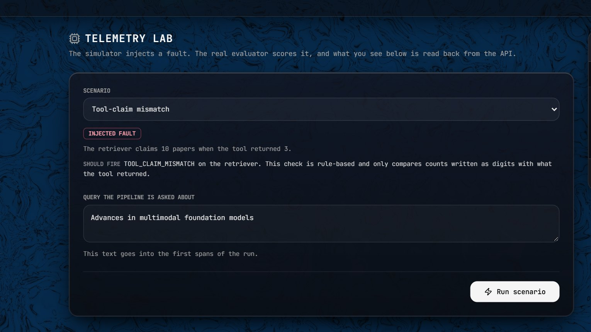
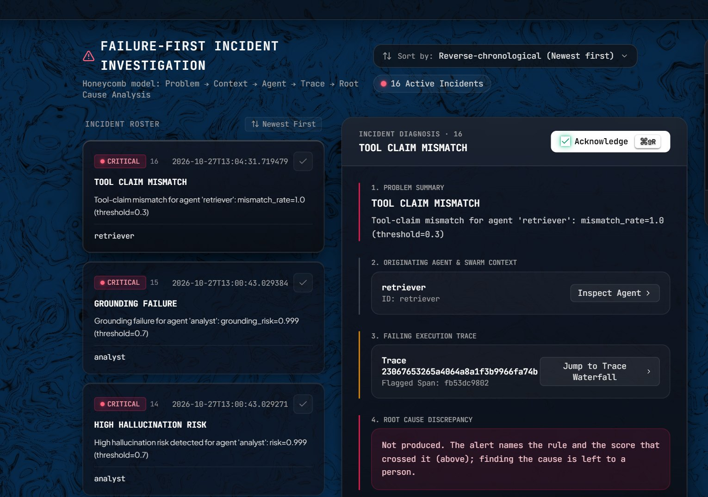

After a label-order bug was fixed, 0.5 flagged 7 of 17 correct answers; 0.3 flags 1
| Neutral weight | F1 | False alarms |
|---|---|---|
| 0.0 to 0.3 | 0.963 | 0.059 |
| 0.4 | 0.897 | 0.176 |
| 0.5 | 0.788 | 0.412 |
Test split, cut-off 0.4, corrected labels. At the 0.7 cut-off every weight up to 0.6 gives the same result.
Before 21 October the code read two DeBERTa labels in swapped order. PR #69 fixed it; every figure was re-measured.
Both withdrawn signals looked good on hand-written cases and failed on real traces
| Signal | Hand-written | Real traces |
|---|---|---|
| Tool-claim check, F1 | 0.842 | 0.000 |
| Inter-agent disagreement | — | 0 of 10 found |
Tool-claim: 19 hand-written cases; no claim found in 8,353 real prose spans. Disagreement: AUC 0.457 without the planner, which is chance.
Real agents write counts in words, not digits; the tool-claim check only reads digits.
A fault injected in the Lab becomes a scored trace and a HIGH incident

Five scenarios; the agent text is fixed, the evaluator is real. Photo: live site

Lab runs of 27 October: GROUNDING_FAILURE for analyst, risk 0.999. Photo: live site
Every figure in this deck comes from these documents in the repository
README.md (state of 2026-10-27)
docs/E2E_TEST_2026-10-27.md
GROUNDING_RECALIBRATION_2026-10.md
DRIFT_REAL_TEXT_DIAGNOSIS_REPORT.md
LLM_JUDGE_COMPARISON_REPORT.md
TOOL_CLAIM_EXTERNAL_TEST_REPORT.md
COMPETITIVE_POSITIONING.md
HOW_IT_WORKS.md; DEMO_GUIDE.md
benchmarks/benchmark_results.json
experiments/results/ablation_results.json
deploy/azure/README.md; .github/workflows/
SESSION_HANDOFF.md, sections 14, 24, 29
Models: sentence-transformers/all-MiniLM-L6-v2; cross-encoder/nli-deberta-v3-small